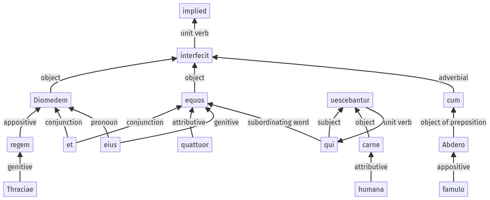

Hyginus, Fabulae, 30pr.9.1-30pr.9.15a
30pr.8.1-30pr.8.11a | 30pr.9.16-30pr.9.22a
Sentence 425
30pr.9.1-30pr.9.15a
Diomedem Thraciae regem et equos quattuor eius, qui carne humana uescebantur, cum Abdero famulo interfecit;
1 Diomedem Thraciae regem et equos quattuor eius
2 qui carne humana uescebantur
1 cum Abdero famulo interfecit
Diomedem Thraciae regem et equos quattuor eius, qui carne humana uescebantur, cum Abdero famulo interfecit;
Highlighting:
- connecting words
- unit verb
- subject
- object
Color code:
- independent clause (level 1, transitive verb)
- subordinate clause (level 2, transitive verb)
